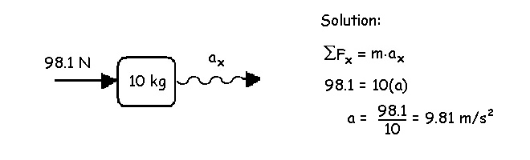

Dynamic Equilibrium
The preceding lectures have covered the kinematics that describe motion. In this, and the next several lectures, we will study the kinetics that cause motion. The kinetics of human motion combine kinematics with anthropometrics and use Newton's laws of motion. There are three basic approaches using the kinetics of human motion (dynamic equilibrium, impulse-momentum, and work-energy-power). This lecture introduces the dynamic equilibrium approach.
Equations of Dynamic Equilibrium:
When studying statics, we considered the resulting forces and moments equal to zero. According to Newton's second law (Force equals mass times acceleration), if force is zero, acceleration must also be zero. In dynamics, acceleration is most often not zero which means the three equations of static equilibrium cannot be used. We therefore need three new equations for dynamic equilibrium.

The sum of the forces in the X direction are equal to the mass of the object times the acceleration of the object in the X direction.
The sum of the forces in the Y direction are equal to the mass of the object times the acceleration of the object in the Y direction.
The sum of the moments is equal to the moment of inertia of the object times the angular acceleration of the object.
Units: Mass has units of kilograms, acceleration has the units of meters per second squared and force has the units of Newtons. Therefore, one Newton = one kilogram meter per second squared.
Example: What is the acceleration if the resultant force of 98.1 N is applied to an object with a mass of 10 kg?

The free body diagram above uses a wavy line to represent acceleration. The wavy line is used so that we do not confuse accelerations with the force vectors.
Example: What is the resultant force applied to a 23 kg object if the acceleration is 17.6 m/s/s?

In the first example, we were told the kinetic and inertia information and we calculated the kinematic variable (acceleration). In the second example, we were told the kinematic and inertial information and we calculated the kinetic variable (force). The first example is called forward dynamics and the second example is called inverse dynamics. In biomechanics, we usually measure the kinematics and use body segment parameters with inverse dynamics to determine the internal forces that caused the motion. Forward dynamics is used in simulations of sport biomechanics.
Muscles and other tissues that cross a joint can cause a segment to have an angular acceleration by creating a moment of force about the joint. In the static equilibrium section, we calculated the force of a single muscle crossing a joint by assuming that the muscle was the only tissue responsible for the moment. Since several muscles and other tissues like ligaments cause moments about each joint in the human body, we really can only calculate the net moment of all these tissues.
Example: Calculate the moment required for an angular acceleration of 112 rad/s2 given the moment of inertia about the elbow is 0.18 kg.m2.